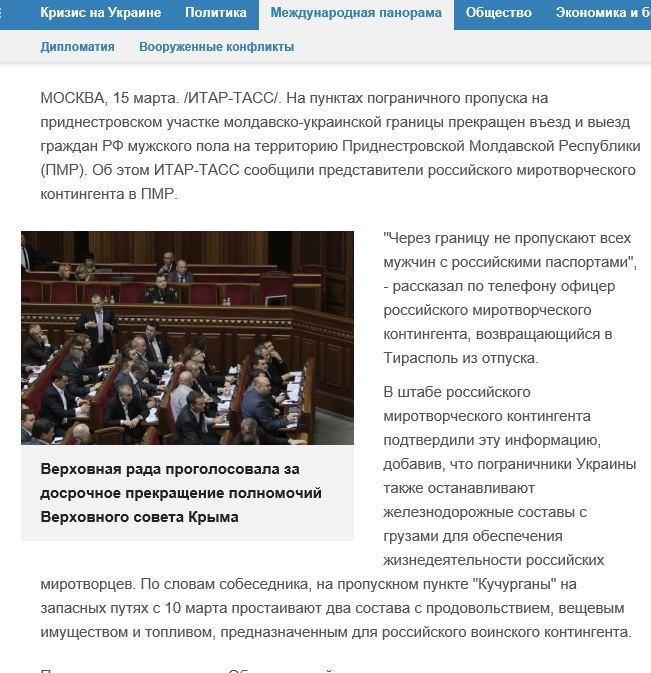

Украина не блокировала грузы для российского миротворческого контингента в Приднестровье
Российское информационное агентство ИТАР-ТАСС 15 марта 2014 года распространило информацию со ссылкой на штаб российского миротворческого контингента о том, что Украина якобы блокировала эшелоны с товарами, обмундированием и продовольствием, которые должны были следовать в Приднестровский регион Республики Молдова для российского миротворческого контингента.
По словам собеседника, на пропускном пункте «Кучурганы» на запасных путях с 10 марта простаивали два состава с продовольствием, вещевым имуществом и топливом, предназначенным для российского воинского контингента.
Впоследствии Министерство иностранных дел Украины опровергло эту информацию со ссылкой на посольство Украины в Молдове.
Кроме того, руководитель делегации РФ в Объединенной контрольной комиссии, сопредседатель Объединенной контрольной комиссии от РФ, старший советник Посольства РФ в Республике Молдова Василий Корчмарь сделал устное заявление, в котором подчеркнул, что:
— ни один российский представитель в Объединенном военном командовании и Объединенной контрольной комиссии не делал для СМИ никаких заявлений относительно блокирования грузов для российских миротворцев;
— информация о фактах блокирования грузов в интересах миротворческого контингента РФ со стороны Украины не соответствует действительности и является, как указал на это представитель России, «журналистской выдумкой»;
— существует один-единственный факт непропуска офицера российского контингента, который не имеет отношения к данному вопросу.
Таким образом, российская сторона на заседании Объединенной контрольной комиссии от 20 марта 2014 г. официально признала, что распространенная в СМИ информация является неправдивой.
Posted On: 2014-03-29T21:00:00

Content Date: 2014-03-29
Download Date: 2021-07-16
Document ID: L0C04FA8R